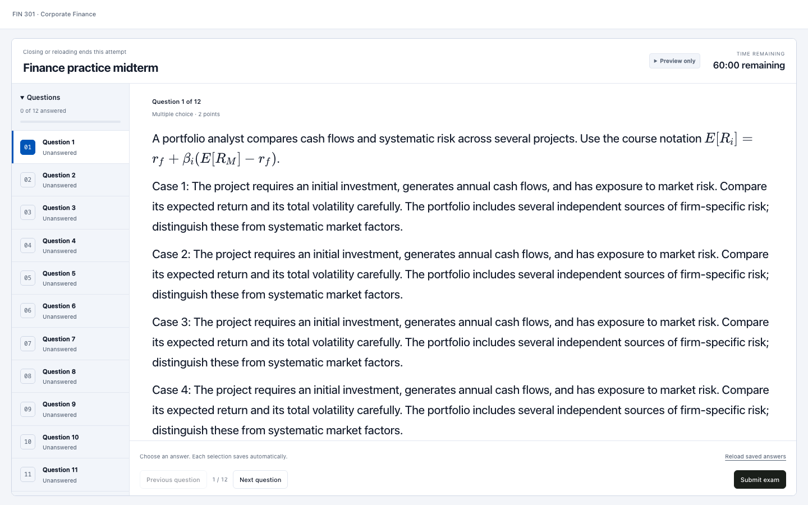
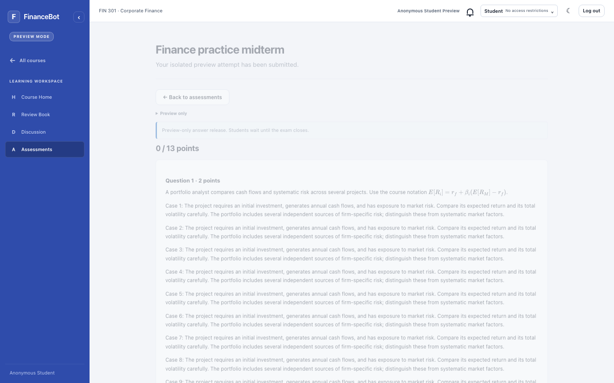
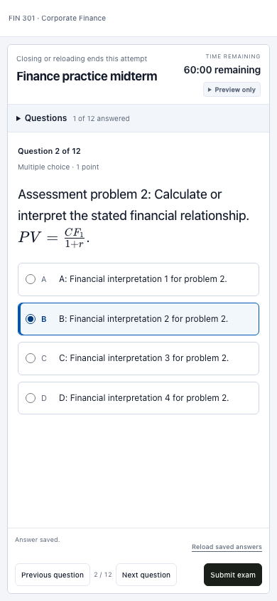

Current behavior
| Action | Outcome |
|---|---|
| Start an exam | The app locks to the sitting. Course navigation and account actions are hidden. |
| Browser Back or a different app route | Blocked while the sitting is active. |
| Submit successfully or reach the deadline | The attempt becomes final and normal navigation returns. |
| Close or reload the browser document | Saved answers are submitted. The same attempt cannot reopen for answering. |
| Close notification is lost | A 120-second lease and recurring background sweep finalize saved answers. |
| Brief connection failure | Answering pauses until the server confirms the sitting. Prolonged loss ends it. |
The rule is disclosed before Start and in the sitting header. Preview follows the same window policy while retaining isolated records and its configured answer-release behavior.
During the exam
Only question navigation, answering, saved-answer reload, and submission remain available.

After confirmed submission
The course sidebar and account actions return. Scores and explanations follow the release policy; unrestricted Preview explicitly simulates release.

Mobile exam
The question list remains collapsible, with the timer and footer in view.
